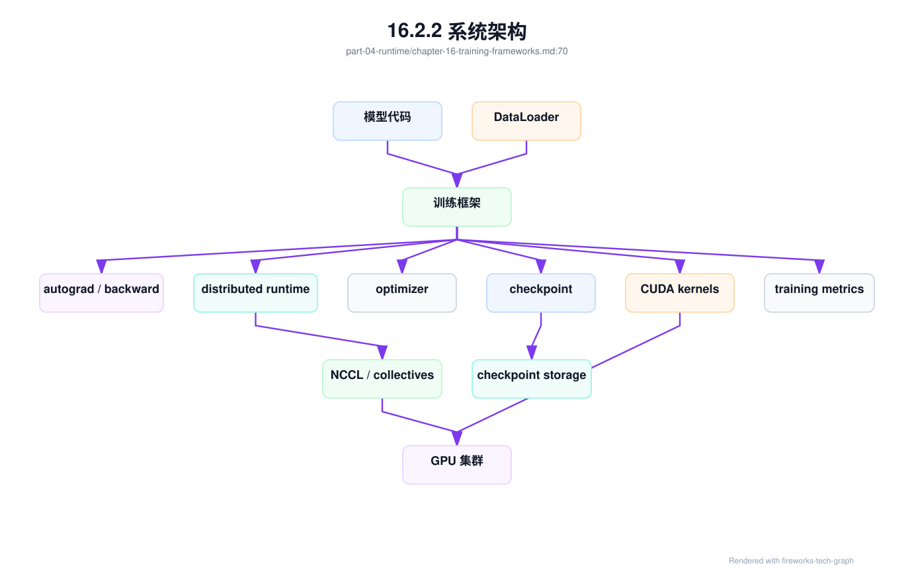

第 16 章：训练框架¶
16.1 导读¶
16.1.1 本章回答的问题¶
- PyTorch、DeepSpeed、Megatron-LM、FSDP、JAX/XLA 在训练系统中分别承担什么角色？
- 混合精度、ZeRO 和 activation checkpointing 如何影响显存、吞吐和稳定性？
- 训练框架选择如何影响 AI Factory 的调度、镜像、监控和故障排查？
16.1.2 本章上下文¶
- 层级定位：本章属于
AI Runtime 层，重点讨论推理引擎、训练框架、并行、通信和 GPU 软件栈。 - 前置依赖：建议先理解 第 15 章：推理引擎 中的核心对象和路径。
- 后续关联：本章内容会继续连接到 第 17 章：分布式并行，并在系统地图、深度标准和读者测试中被交叉引用。
- 读完能力：读完本章后，读者应能把《训练框架》中的概念映射到 AI Factory 的生产路径、工程对象、观测证据和设计取舍。
16.1.3 读者测试¶
- 机制题：读者能否解释 PyTorch、DeepSpeed、Megatron-LM、FSDP 的核心机制，以及它们如何共同支撑《训练框架》？
- 边界题：读者能否区分 框架、引擎、CUDA/NCCL、container runtime、driver 和硬件拓扑 的责任边界，并说明哪些问题不能简单归因到本章组件？
- 路径题：读者能否从框架调用追到推理/训练 runtime、CUDA、NCCL、通信、GPU/HBM 和版本矩阵，并指出本章对象在路径中的位置？
- 排障题：当《训练框架》相关生产症状出现时，读者能否列出第一层证据、下一跳证据、可能 owner 和止血动作？
16.1.4 一个真实场景¶
一个团队从单机 PyTorch 脚本扩展到数百张 GPU。单机实验能跑，分布式后却频繁 OOM、吞吐低、checkpoint 慢、偶发 NCCL hang。模型代码没有明显 bug，但训练框架配置、并行策略、混合精度、ZeRO stage、activation checkpointing、数据加载和 checkpoint 格式全部交织在一起。平台团队发现，问题不再是“脚本能不能运行”，而是训练框架和 GPU 集群是否形成可复现、可观测、可恢复的系统。
训练框架是模型算法和 GPU 集群之间的翻译层。模型开发者用它表达 forward、loss、optimizer 和数据加载；框架把这些操作转成 CUDA kernel、NCCL 通信、内存分配、checkpoint 和调度行为。AI Factory 如果把训练框架当作用户自带细节，就无法解释资源需求、性能瓶颈和故障模式。框架配置本身就是生产配置。
这个场景还说明，大规模训练的问题往往不是单个技术点。OOM 可能来自 micro batch、activation、optimizer state 或分片策略；吞吐低可能来自数据加载、通信 bucket、拓扑或 checkpoint；恢复失败可能来自 ZeRO/FSDP checkpoint 格式；NaN 可能来自混合精度、学习率或数据。训练框架章节的目标，是把这些机制和平台责任对应起来。
因此，训练框架从实验室脚本进入 AI Factory 后，会变成一份跨团队契约。算法团队关心模型是否收敛，平台团队关心作业是否能被调度、观测、恢复和复现，基础设施团队关心通信、存储和 GPU 是否被正确使用。一个参数名看似只是脚本选项，实际可能改变显存峰值、网络流量、checkpoint 文件数量和故障恢复时间。没有这层共识，训练任务会在“能跑一次”和“可持续生产”之间反复摇摆。
所以本章把训练框架放在 Runtime 层讨论，而不是放在模型代码附录中。它决定一次训练如何消耗 GPU、网络和存储。
16.2 基础模型¶
16.2.1 核心概念¶
训练框架负责自动微分、计算图执行、分布式通信、优化器、混合精度、checkpoint、数据加载和调试工具。它向上服务模型开发，向下调用 CUDA、NCCL、文件系统、网络和 GPU。常见框架和工具包括 PyTorch、DeepSpeed、Megatron-LM、FSDP、JAX/XLA。它们不是互斥概念，很多生产训练会组合使用。
PyTorch 提供通用深度学习生态、动态图、autograd 和 torch.distributed。DeepSpeed 提供 ZeRO、offload 和大模型训练优化。Megatron-LM 提供大规模 Transformer 并行训练能力，如 tensor parallel、pipeline parallel 和 sequence parallel。FSDP 是 PyTorch 生态中参数、梯度和优化器状态分片的重要能力。JAX/XLA 则通过函数式编程和编译优化支持高性能训练研究。
训练框架还包括一组显存和性能技术。混合精度使用 BF16、FP16、FP8 等数据类型降低显存和带宽压力；ZeRO 将优化器状态、梯度和参数分片；activation checkpointing 用重算换显存；并行策略把模型、数据和计算拆到多个 GPU。每个技术都在显存、计算、通信、稳定性和调试复杂度之间做取舍。
从平台视角看，框架版本、CUDA/NCCL 版本、driver、镜像、并行配置和 checkpoint 格式必须进入任务记录。否则训练失败后无法复现，也无法判断问题来自代码、框架、运行时还是基础设施。训练框架不是“pip install 的库”，而是 AI Factory 的 Runtime 层组成部分。
还要区分框架 API、运行时行为和平台约束。API 描述用户如何写模型，运行时决定 kernel、通信和内存如何发生，平台约束决定这些行为是否能在指定节点、网络和存储上稳定执行。成熟平台不会只问“用哪个框架”，还会问“框架如何启动、如何切分状态、如何保存进度、如何暴露指标、失败后由谁恢复”。这些问题共同定义训练框架在生产环境中的真实边界。
16.2.2 系统架构¶
训练框架把模型训练拆成几个运行路径：数据加载把样本送到设备，forward 计算 loss，autograd 构建 backward，optimizer 更新参数，distributed runtime 执行梯度同步或参数分片，checkpoint 保存状态，metrics 记录训练进度。平台需要沿这些路径观测 step time、data time、forward/backward、communication、optimizer 和 checkpoint。
分布式训练架构中，训练框架还要和调度系统协同。调度器负责分配节点、GPU、网络和存储；容器镜像提供框架和依赖；框架启动进程组并初始化 NCCL；训练代码执行计算和通信；checkpoint 写入共享存储；监控系统收集指标。任何一层不一致，都可能导致任务启动失败或运行中 hang。
架构中最重要的控制点是配置。Framework version、precision、parallelism、ZeRO/FSDP 配置、activation checkpointing、data loader、checkpoint format 和 recovery policy 都会改变资源需求和故障模式。平台应把这些配置作为 training runtime spec 管理，而不是把它们埋在用户脚本参数里。
这个 spec 需要同时进入控制面和数据面。控制面根据它判断 quota、gang scheduling、节点亲和、镜像和存储挂载；数据面根据它初始化进程组、设置环境变量、选择通信后端并执行训练循环。日志和指标也要带上 spec 的版本号，否则一次训练失败只能看到表面错误，无法追溯到底是模板升级、框架升级、并行策略变化还是用户代码变化。架构的成熟度，体现在这些关联能否自动生成和自动保存。
还应有一条恢复路径：调度系统重启作业，launcher 读取同一份 spec，框架加载 checkpoint，监控系统继续沿用同一实验标识。缺少这条路径，checkpoint 只是文件，不是可恢复能力。
架构评审时，应检查每条路径是否有 owner：镜像由平台维护，训练代码由模型团队维护，通信和拓扑由基础设施团队验证，checkpoint 和产物由模型平台管理，指标由可观测性系统承接。职责不清时，分布式训练故障会在团队之间来回转移。

生产环境还需要一张训练运行时矩阵。它不是传统意义上的兼容表，而是把“这个框架组合是否可以进入某个资源池”写成可审计事实。矩阵至少包含框架版本、CUDA/NCCL/driver、launcher、并行能力、checkpoint 格式、已验证 GPU 拓扑、已知限制和回滚版本。没有这张矩阵，平台会把用户提交的训练任务直接扔给集群，用真实 GPU 时间替代本该在准入阶段完成的验证。
framework_runtime_matrix:
matrix_id: frm-h100-train-20260620
scope:
resource_pool: training-prod-h100
supported_frameworks:
- framework: pytorch
framework_version: pinned
cuda_version: pinned
nccl_version: pinned
driver_baseline: driver-prod-h100-202606
launcher: torchrun-or-platform-launcher
- framework: deepspeed
framework_version: pinned
zero_stages: [1, 2, 3]
offload_modes: [none, cpu, nvme]
- framework: megatron_lm
framework_version: pinned
tensor_parallel_limits: verified_by_template
pipeline_parallel_limits: verified_by_template
validation:
single_gpu_smoke: passed
single_node_nccl: passed
multi_node_nccl: passed
short_training_run: passed
checkpoint_save_restore: passed
metrics_emission: passed
runtime_contract:
required_metadata:
- image_digest
- framework_config_digest
- parallelism_plan_record
- nccl_env_contract
- checkpoint_format
disallowed:
- floating_dependency_install
- unpinned_base_image
- user_mutated_nccl_env_without_record
rollback:
previous_matrix_id: frm-h100-train-20260518
rollback_test: passed
这张矩阵的价值在于它把“框架能用”拆成“在什么池、什么拓扑、什么版本和什么失败语义下能用”。例如 PyTorch + FSDP 在 8 卡节点内通过，不代表 DeepSpeed ZeRO-3 在 256 卡跨 rack 训练中也通过；Megatron-LM 的 tensor parallel 模板通过，不代表用户可以随意改变 pipeline stage 和 checkpoint 格式。矩阵要被调度、准入、观测和 PRR 同时消费：调度用它决定作业能否进入资源池，准入用它决定是否需要重跑回归，观测用它给指标打 template 标签，PRR 用它判断模型上线前的训练证据是否来自受控路径。
矩阵也给升级提供边界。框架、NCCL、driver、OFED、CUDA、GPU Operator 或容器 runtime 任一变更，都可能让矩阵中的某些能力失效。平台不应让用户任务在失效矩阵上继续运行，除非明确标记为实验队列。一个成熟 AI Factory 会把训练 runtime 当作产品版本发布，而不是把它当作用户镜像里的自由组合。
16.3 关键技术¶
16.3.1 PyTorch¶
PyTorch 是最广泛使用的深度学习框架之一。它提供动态图、autograd、torch.distributed、FSDP、编译优化和丰富生态。大量模型库、训练脚本和研究代码都以 PyTorch 为基础。对 AI Factory 来说，PyTorch 的优势是生态成熟、开发效率高、人才广泛；挑战是版本组合多，生产一致性需要管理。
生产中，PyTorch 版本、CUDA 版本、NCCL 版本、driver、Python 版本和第三方库必须纳入兼容矩阵。一个小版本变化可能影响 kernel 选择、编译行为、分布式通信或 checkpoint 兼容性。训练任务如果使用 floating tag 镜像或运行时安装依赖，后续复现会非常困难。平台应提供经过验证的基础镜像。
PyTorch 的灵活性也带来治理问题。用户可以在脚本中自定义数据加载、通信、checkpoint 和日志，这对研究有利，但对平台排障不利。AI Factory 应提供标准训练模板、指标上报库和 checkpoint 规范，让用户保留模型开发自由，同时不破坏平台观测和恢复能力。
PyTorch 任务的排障应从时间线入手：data loading、forward、backward、optimizer、communication、checkpoint 哪一段变慢，是否出现 NaN，是否某些 rank 落后，是否 NCCL 报错。把所有问题都看成“PyTorch 慢”没有意义。框架只是入口，关键是拆分训练 step。
在平台落地时，PyTorch 最适合作为默认训练主路径，但主路径不等于放任每个团队自行拼环境。常见做法是提供受控 base image、标准 launcher、统一日志格式、rank 级指标采集和最小训练样例。用户可以替换模型和数据，但镜像 digest、启动命令、distributed backend、checkpoint 目录和关键环境变量应由平台记录。这样既保留 PyTorch 的开发效率，也避免生产环境变成不可追踪的脚本集合。
对平台团队来说，PyTorch 支持的关键不是替用户写训练代码，而是让训练代码运行在可解释的边界内。
16.3.2 DeepSpeed¶
DeepSpeed 提供大模型训练优化能力，包括 ZeRO、混合精度、offload、并行训练和相关运行时能力。它常用于降低单卡显存占用、扩大模型规模和提高训练效率。对很多团队来说，DeepSpeed 是从中等规模训练走向更大模型的重要工具，但它也引入了更多配置和状态管理。
DeepSpeed 的配置复杂度较高。ZeRO stage、offload 到 CPU 或 NVMe、communication bucket、gradient accumulation、activation checkpointing、optimizer、checkpoint 格式都会影响显存、吞吐和稳定性。一个配置可以让任务从 OOM 变为可运行，也可以让通信开销大幅增加。配置不是调参细节，而是系统设计。
平台应把 DeepSpeed config 纳入任务记录和审计。训练失败时，需要知道使用了哪个 ZeRO stage、是否 offload、bucket 大小、混合精度类型、checkpoint 格式和恢复方式。若这些信息只在用户本地 JSON 中，平台无法复盘。DeepSpeed 的能力越强，越需要配置治理。
DeepSpeed 还会改变 checkpoint 和恢复流程。分片状态如何保存，如何导出完整权重，跨版本是否兼容，恢复时是否需要相同 world size，都要提前验证。很多训练事故发生在“训练能跑，但 checkpoint 不能恢复或不能服务化”。平台应把恢复测试作为训练模板的一部分。
使用 DeepSpeed 时，平台还应显式管理资源预期。开启 offload 可能把瓶颈从 HBM 移到 CPU 内存、PCIe 或 NVMe；增大 bucket 可能减少通信次数，却提高临时显存；gradient accumulation 可以降低单步显存压力，却改变有效 batch 和故障恢复粒度。每项能力都应配套指标和默认阈值。否则 DeepSpeed 配置会被当成“魔法优化”，一旦性能退化或恢复失败，就很难解释是哪一个开关改变了系统行为。
因此，DeepSpeed 模板至少要附带推荐适用范围，而不是只给出一份 JSON。
16.3.3 Megatron-LM¶
Megatron-LM 关注大规模 Transformer 训练，提供 tensor parallel、pipeline parallel、sequence parallel 等能力，常用于训练超大模型和研究并行策略。它把模型内部计算切分到多个 GPU，使单个 GPU 无法承载的模型可以训练。相比通用框架，它更贴近大模型训练的高性能路径。
Megatron-LM 对并行配置和 GPU 拓扑非常敏感。Tensor parallel 更依赖节点内高速互联，pipeline parallel 需要处理阶段气泡，sequence parallel 改变激活和通信模式。并行维度如何映射到 NVLink、NVSwitch、InfiniBand 或 RoCE，会直接影响训练效率。配置合理与否，可能比单个 GPU 性能更重要。
工程上，Megatron-LM 类训练需要更严格的启动和准入。所有 rank 必须同时启动，环境变量、模型配置、并行大小、数据路径和 checkpoint 必须一致。一个 rank 配置错误可能让整个任务 hang。平台应提供作业模板和配置校验，而不是让用户手写复杂启动命令。
Megatron-LM 的优势也带来调试成本。混合并行后，loss spike、OOM、通信慢或 checkpoint 失败都可能涉及多个维度。排障需要知道数据并行组、张量并行组、流水并行阶段和节点拓扑。平台如果不记录这些映射，故障复盘会非常困难。并行策略必须可观测。
因此，Megatron-LM 类任务应把 parallel size、rank group、pipeline stage、virtual pipeline、micro batch 和全局 batch 写入元数据。调度器也要尽量让高频通信的 tensor parallel group 留在节点内，把更适合扩展的 data parallel group 放到跨节点网络上。若调度结果和并行拓扑脱节，同一份训练代码每次启动都可能得到不同吞吐。高性能训练不是单靠框架实现的，它需要框架、launcher 和调度策略共同收敛。
这也是为什么大模型训练平台要把并行配置和资源放置一起审查。
16.3.4 FSDP¶
FSDP 即 Fully Sharded Data Parallel，是 PyTorch 中用于参数、梯度和优化器状态分片的能力。它通过把模型状态分散到多个数据并行进程，降低单卡显存占用，使更大模型能在有限 GPU 上训练。与传统 data parallel 每卡保存完整模型状态不同，FSDP 在需要时 gather 参数，使用后再 shard。
FSDP 的核心取舍是显存换通信和复杂度。显存压力降低了，但前向和反向过程中需要更多 all-gather、reduce-scatter 等通信；wrap 策略、prefetch、sharding strategy、mixed precision 和 checkpoint 格式都会影响性能。一个不合适的 FSDP 配置，可能不 OOM 了，但 step time 变得不可接受。
FSDP 也改变 checkpoint 语义。可以保存 full state dict、sharded state dict 或 local state dict，不同格式适合不同恢复和导出场景。平台需要规定训练中保存什么格式、发布时如何导出、恢复时是否允许 world size 变化。没有规范，模型训练产物很难进入后续服务流程。
排障时，要关注通信占比、参数 gather 时间、显存峰值、rank 间不均衡和 checkpoint 时间。FSDP 不是简单开关，而是一组策略。平台应提供默认推荐配置，并允许高级用户在可审计范围内调整。否则 FSDP 会在不同团队中形成不可复现的配置碎片。
FSDP 的平台化重点是 wrap 策略和 state dict 策略。哪些模块被分片，会影响通信频率、显存峰值和重算边界；保存 full state dict 便于发布，却可能在保存时产生内存压力；保存 sharded state dict 更适合训练恢复，却要求后续导出流程理解分片格式。平台应把“训练恢复 checkpoint”和“模型发布权重”分开设计，用自动化流程完成转换，而不是让用户在事故现场手工处理。
这种分离能减少训练中断恢复和模型交付之间的相互牵制。
16.3.5 JAX/XLA¶
JAX 提供函数式编程、自动微分、向量化和 XLA 编译能力，适合高性能数值计算和大规模训练研究。XLA 可以进行图级优化、算子融合和设备映射，使某些模型在特定硬件和静态形状下获得很高性能。它的编程模型和调试方式与 PyTorch 不同，对团队能力和平台支持有不同要求。
JAX/XLA 的优势在于编译优化和函数式抽象，但代价是编译时间、静态形状约束和调试复杂度。训练任务可能在第一次运行时花较长时间编译；输入形状变化可能触发重新编译；错误栈可能不如动态图直观。平台需要把编译时间和运行时间区分开，否则会误判任务启动慢或吞吐异常。
如果 AI Factory 支持 JAX/XLA，就要在镜像、依赖、设备映射、指标和作业模板上体现差异。不能假设 PyTorch 的日志、checkpoint 和分布式启动方式直接适用。多框架平台需要统一控制面，但数据面和 runtime 模板可以不同。统一不等于抹平差异。
JAX/XLA 适合具备相应工程能力的团队和稳定训练路径。对于大量普通用户，自助平台可能更适合提供 PyTorch 主路径；对于核心训练团队，可以提供 JAX/XLA 专用环境。平台选择支持哪些框架，应考虑长期维护成本，而不是只看单次性能潜力。
从治理角度看，JAX/XLA 更需要明确的形状、编译缓存和版本边界。平台应区分 compilation cache、数据缓存和 checkpoint 存储，避免把编译成本误算为训练吞吐问题。作业重试也要考虑重新编译的影响。若同一任务因输入 shape 变化频繁触发编译，GPU 可能长时间没有有效训练产出。把编译行为纳入观测，是支持 JAX/XLA 的基本要求。
16.3.6 混合精度¶
混合精度使用 FP16、BF16、FP8 等较低精度格式提高吞吐、降低显存和带宽压力。现代 GPU 对低精度矩阵计算有专门优化，因此混合精度是大模型训练和推理的重要效率手段。它能让更大 batch 或更大模型在同样 HBM 下运行，也能提高单位 GPU 的有效吞吐。
混合精度的风险是数值稳定。FP16 可能需要 loss scaling，BF16 通常更稳但硬件支持和性能特征不同，FP8 对框架、硬件和模型更敏感。精度选择会影响 loss、gradient、NaN、收敛和最终质量。不能只因为某种精度理论更快，就在生产训练中默认使用。稳定性验证必须跟上。
监控应包括 NaN/Inf、gradient norm、loss scaling、overflow、训练 loss、validation loss 和关键评测。出现异常时，要能关联精度配置、optimizer、learning rate 和数据。混合精度问题如果缺少指标，常被误判为数据坏或硬件故障。数值稳定是 runtime 责任的一部分。
工程上，精度配置应进入实验记录和 checkpoint 元数据。恢复训练时，精度策略和 scaler 状态必须一致；导出模型时，也要明确权重数据类型和服务端期望格式。混合精度不是临时性能开关，而是训练状态的一部分。平台应为不同硬件提供经过验证的默认精度策略。
混合精度的验收不能只看单步是否报错，而要覆盖短训练稳定性和恢复稳定性。一个配置可能在几百步内正常，却在学习率变化、长序列样本或特定数据分布下出现 overflow。平台模板应提供 smoke test、数值监控和回滚路径：新精度策略先在代表性模型上跑固定步数，比较 loss 曲线、吞吐和显存，再进入大规模训练。性能优化必须以可解释的数值行为为前提。
16.3.7 ZeRO¶
ZeRO 将优化器状态、梯度和参数在数据并行进程之间分片，降低单卡显存占用。不同 stage 分片范围不同：较低 stage 通常先分片优化器状态和梯度，较高 stage 进一步分片参数。显存节省越多，通信、实现和 checkpoint 复杂度通常越高。ZeRO 是大模型训练中常见的显存优化工具。
ZeRO 的关键价值是让更大模型或更大 batch 能在有限 GPU 上训练。它把原本每个 data parallel rank 都复制的状态拆开，从而降低冗余。但这些状态在计算时仍需要通信和重组。ZeRO 不是免费扩容，它把显存压力转移为通信和状态管理压力。平台必须同时看显存和 step time。
ZeRO 配置会影响 checkpoint、恢复和服务化。分片 checkpoint 如何保存，是否能在不同 world size 下恢复，如何导出完整权重，是否兼容后续微调和推理，都要提前设计。很多团队训练时只关注能跑，等到要发布模型时才发现 checkpoint 转换困难，这是平台流程问题。
排障指标包括每 rank HBM、通信时间、optimizer step time、checkpoint time、分片状态大小、恢复时间和失败 rank。ZeRO stage 选择应基于模型规模、网络能力、存储能力和团队调试能力。越高 stage 不一定越好，合适 stage 才是工程答案。
ZeRO 还会影响调度和容量规划。相同模型在不同 stage 下，单卡显存、跨节点通信、CPU 内存、NVMe 临时空间和 checkpoint 文件数量都可能不同。平台如果只记录“需要 N 张 GPU”，就无法判断作业为什么在某个队列中表现异常。更稳妥的做法是把 ZeRO stage、offload 策略和 checkpoint 策略纳入资源画像，让调度、监控和成本核算看到真实负载形态。
这样容量规划讨论的对象才是实际训练负载，而不是抽象 GPU 数量。
16.3.8 activation checkpointing¶
Activation checkpointing 通过不保存部分中间激活，在反向传播时重新计算，降低显存占用。它用计算换显存，常用于大模型、长序列或 batch size 受 HBM 限制的训练。没有它，某些模型可能无法在目标 GPU 上训练；有了它，可以扩大 batch 或上下文，但 step time 通常会增加。
它的关键取舍是显存与计算。保存更少 activation，反向阶段重算更多，训练更慢；保存更多 activation，显存压力更高。在哪些层启用、粒度多细、是否与 FSDP/ZeRO/混合精度组合，都会影响最终性能。Activation checkpointing 不是简单布尔开关，而是策略。
工程上，要监控 HBM 峰值、step time、forward/backward time、recompute time 和 tokens/s。若启用后显存降低但吞吐下降过多，可能不划算；若不启用导致只能用很小 batch，也可能降低总体效率。平台应提供基线比较，让训练团队知道这个取舍是否值得。
Activation checkpointing 还影响调试和复现。重算路径中的随机性、dropout、混合精度和编译优化都需要正确处理，否则可能出现难以解释的数值差异。框架通常会处理大部分细节，但生产平台仍应在升级框架或改变策略后做回归验证。显存优化不能牺牲训练正确性。
在大规模训练中，它通常与 FSDP、ZeRO、tensor parallel 和长上下文训练一起出现，因此不能孤立评估。启用后如果显存降低但 checkpoint 周期变长，故障后重跑成本可能上升；如果 step time 增加但允许更大的 global batch，整体训练效率反而可能改善。平台应要求每个模板给出启用前后的基线对比，让用户知道它解决的是 HBM 约束、吞吐约束还是模型规模约束。
只有把节省的显存和增加的计算同时量化，团队才能做可靠取舍。
16.4 工程落地¶
16.4.1 工程实现¶
训练任务应把框架配置作为一等信息，而不是把它隐藏在启动脚本中。Runtime spec 至少应包含 framework、framework version、CUDA/NCCL/driver 版本、precision、distributed strategy、DeepSpeed/FSDP/ZeRO 配置、activation checkpointing、checkpoint format、data loader 和恢复策略。这些信息应进入实验追踪、任务记录和排障报告。
示例配置如下：
runtime:
framework: pytorch
framework_version: pinned
distributed: fsdp
precision: bf16
activation_checkpointing: true
deepspeed:
enabled: false
checkpoint:
format: sharded
更完整的作业提交应引用运行时矩阵，而不是重新声明全部事实：
training_runtime_spec:
job_id: exp-20260620-031
framework_runtime_matrix: frm-h100-train-20260620
image_digest: sha256:recorded
framework_config_digest: sha256:recorded
precision: bf16
distributed_strategy: fsdp
activation_checkpointing:
enabled: true
policy: transformer_block
checkpoint:
training_format: sharded_state_dict
release_export_required: true
restore_drill_ref: ckrd-20260620-031
observability:
emit_step_breakdown: true
emit_rank_metrics: true
emit_nccl_metrics: true
这个 spec 的关键是把运行时选择从“命令行参数”提升为“平台事实”。它让后续的 parallelism_plan_record、placement_commit_record、nccl_env_contract、checkpoint_restore_drill 和 training_roi_ledger 可以共享同一坐标系。若一次训练失败，团队可以先判断它是否运行在受控矩阵内；若不在，事故归因应优先进入实验路径，而不是污染生产 runtime 的可靠性报表。
训练框架还需要 launcher_contract。Launcher 是把调度结果变成多进程训练的胶水层，可能是 torchrun、DeepSpeed launcher、Megatron 启动脚本、Slurm srun、Ray worker 或平台自研 launcher。它决定 rank、world size、master address、环境变量、日志路径、checkpoint 路径、容器工作目录和失败退出语义。很多训练事故不是框架本身坏了，而是 launcher 把 rank 映射、NCCL env 或恢复参数传错了。示例：
launcher_contract:
contract_id: lc-torchrun-h100-202606
framework_runtime_matrix: frm-h100-train-20260620
launcher:
type: torchrun
version_or_template: pinned
managed_by: training_platform
rank_mapping_inputs:
placement_commit_record: required
rank_topology_contract: required
gpu_assignment_record: required
environment:
MASTER_ADDR: platform_generated
MASTER_PORT: platform_allocated
WORLD_SIZE: derived_from_admitted_replicas
RANK: unique_per_process
LOCAL_RANK: unique_per_node
NCCL_SOCKET_IFNAME: from_nccl_env_contract
filesystem:
checkpoint_root: platform_managed
log_root: platform_managed
dataset_mounts: from_dataset_manifest
failure_semantics:
rank_nonzero_exit: fail_job_or_elastic_policy
rendezvous_timeout: emit_rendezvous_evidence
partial_worker_start: release_or_quarantine_by_policy
这个 contract 应由调度系统、运行时模板和训练框架共同消费。调度系统生成 placement，launcher contract 把 placement 变成 rank 环境，框架按照这些环境建立 process group。若用户脚本绕过 contract 自行设置 MASTER_ADDR、RANK 或 NCCL 接口，任务应被标记为实验或拒绝进入生产队列。这样平台才能证明训练失败来自受控路径，而不是不可审计脚本。
平台应提供经过验证的镜像和模板。一个模板对应一组框架、CUDA、NCCL、driver、依赖和启动方式，并通过标准训练任务验证。用户可以扩展模型代码，但不应随意破坏底层兼容矩阵。模板化不是限制创新，而是让生产训练具备可复现基础。
工程实现还要支持运行时自检。任务启动前检查 GPU、driver、CUDA、NCCL、框架版本、网络接口、文件系统和环境变量；启动后记录 rank 映射、world size、并行配置和 checkpoint 路径。自检能把很多错误提前暴露在启动阶段，避免任务运行数小时后才失败。训练框架平台化的第一步，是让环境可验证。
更完整的实现会把训练模板分成三层：基础镜像定义依赖边界，launcher 定义进程启动和环境注入，training runtime spec 定义框架策略。模板发布前运行固定验收：单卡 smoke test、双卡通信、多节点 NCCL、短训练、checkpoint 保存、checkpoint 恢复和指标采集。只有这些环节都通过，模板才进入用户可选列表。这样用户看到的不是一组零散命令，而是一条经过验证的训练运行时路径。
模板变更也应走版本化发布。旧任务继续使用旧模板，新任务灰度到新模板，出现异常可以回滚。
实现中还要避免把所有逻辑塞进用户启动脚本。启动脚本应尽量薄，只负责读取平台注入的参数并启动训练；环境准备、节点发现、日志目录、checkpoint 目录、监控标签和失败收集应由平台组件完成。脚本越厚，模板越难升级，事故后越难复盘。
16.4.2 常见故障¶
第一类故障是版本不兼容。PyTorch、CUDA、NCCL、driver、DeepSpeed 和模型库之间某个版本不匹配，可能导致启动失败、性能下降、通信 hang 或 checkpoint 不兼容。解决方向是维护兼容矩阵、固定镜像版本、禁止 floating dependency，并在任务启动前输出完整环境信息。
第二类故障是混合精度导致数值异常。表现为 NaN、loss spike、gradient norm 异常或训练突然发散。排查时要看 precision、loss scaling、overflow、learning rate、optimizer 和数据 shard。若监控缺少这些字段，团队容易把数值问题误判为硬件故障或数据问题。
第三类故障是 ZeRO/FSDP checkpoint 无法恢复。训练中看似正常，节点故障或发布导出时才发现 checkpoint 缺少状态、格式不兼容或 world size 变化不可恢复。平台应把恢复测试纳入模板验收，并明确训练 checkpoint 与发布权重的转换流程。能保存不等于能恢复。
第四类故障是并行策略和拓扑不匹配。Tensor parallel 跨越低带宽链路，pipeline stage 分布不均，FSDP 通信占比过高，导致 GPU 利用率看似不低但 tokens/s 很差。排查需要 rank 到节点/GPU/NIC 的映射。没有拓扑记录，分布式训练性能问题很难定位。
第五类故障是“成功运行但不可运营”。任务能启动、loss 也下降，但日志不含 rank 信息，checkpoint 无法按租户归档，指标没有模型和实验标签，失败后不知道从哪个 step 恢复。这类问题不会在单次实验中暴露，却会在规模化运营中消耗大量人力。训练框架平台化的价值，正是把这些非功能要求提前固化，而不是等事故发生后再补脚本。
故障处理要坚持先定位层次，再定位组件：用户代码、框架配置、Runtime 依赖、调度放置、网络、存储和硬件分别验证。
16.4.3 性能指标¶
训练效率指标包括 step time、tokens/s、samples/s、GPU utilization、GPU MFU、data loading time、forward time、backward time、optimizer time 和 checkpoint time。它们回答训练是否高效。单一 GPU utilization 不能解释瓶颈，必须拆分 step 组成。框架层指标是训练优化的基础。
显存和通信指标包括 HBM peak、activation memory、optimizer state memory、gradient memory、communication time、all-reduce/all-gather/reduce-scatter time、NCCL error 和 rank skew。它们回答显存优化和分布式策略是否合理。FSDP、ZeRO 和 Megatron-LM 都需要这些指标才能调优。
数值稳定指标包括 loss、validation loss、gradient norm、NaN/Inf 次数、loss scaling、overflow 和学习率。它们回答训练是否可靠收敛。混合精度和优化器配置改变后，必须观察这些指标。性能提升如果伴随数值不稳定，就不能作为生产改进。
运行时治理指标包括 framework version、CUDA/NCCL/driver version、镜像 digest、配置版本、checkpoint format、恢复成功率和任务失败分类。它们回答平台是否可复现、可恢复、可治理。训练框架指标不仅服务单个任务，也服务平台兼容矩阵和模板演进。
这些指标应按 rank、node、job、tenant、model 和 template 多个维度聚合。Rank 维度用于定位慢节点和异常进程，job 维度用于判断一次训练是否健康，template 维度用于评估某个运行时版本是否可靠，tenant 维度用于容量和成本治理。没有分层聚合，指标会变成大量曲线；有了正确维度，指标才能变成工程决策依据。
指标还要保留历史基线。没有基线，就无法判断一次吞吐下降是模型变大、数据变化、框架升级还是集群退化。
指标口径也要固定。tokens/s 应说明按全局 token、有效 token 还是训练样本估算；GPU MFU 应说明理论峰值来源；checkpoint time 应区分同步保存和后台保存；失败率应区分用户错误、平台错误和硬件错误。口径不一致，跨团队比较会失真。
16.4.4 设计取舍¶
第一个取舍是生态与性能。PyTorch 生态强、开发快，JAX/XLA 在特定场景可能有编译优势，Megatron-LM 和 DeepSpeed 在大模型训练中提供成熟优化。平台不应无限支持所有组合，而应定义主路径和专家路径。主路径服务大多数团队，专家路径服务核心训练需求。
第二个取舍是显存与通信。FSDP、ZeRO 和 activation checkpointing 都能降低显存压力，但会增加通信或重算。显存节省不等于训练更快。选择策略时，应同时看可训练模型规模、tokens/s、通信占比、checkpoint 成本和调试复杂度。能跑只是第一步，跑得稳且划算才是目标。
第三个取舍是灵活脚本与平台模板。完全自由的脚本适合研究，但难以复现和排障；严格模板提高稳定性，但可能限制创新。可行做法是分层：基础环境、启动、指标和 checkpoint 标准化，模型代码和部分训练参数开放。这样平台能治理关键路径，用户仍能迭代模型。
最后是版本升级速度与稳定性。新框架版本可能带来性能和功能，也可能引入不兼容。AI Factory 应通过灰度镜像、标准训练基准和回滚策略管理升级。训练框架是基础 runtime，升级方式应接近操作系统和驱动治理，而不是普通应用依赖随意更新。
还有一个取舍是统一平台与多框架自治。统一平台降低学习成本和运维成本，但过度统一会压制不同框架的最佳实践；完全自治提升灵活性，却会让镜像、监控、checkpoint 和故障处理碎片化。较好的边界是统一资源申请、启动记录、指标协议和产物管理，同时允许不同框架拥有专用 launcher 和推荐模板。平台要统一的是治理面，不是把所有训练代码改造成同一种写法。
16.5 小结与延伸阅读¶
16.5.1 小结¶
- 训练框架是模型代码和 GPU 集群之间的执行层。
- FSDP、ZeRO 和 activation checkpointing 都是在显存、通信和计算之间做取舍。
- 混合精度提升效率，但必须监控数值稳定性。
- 框架配置应进入任务记录、监控和 checkpoint 管理。